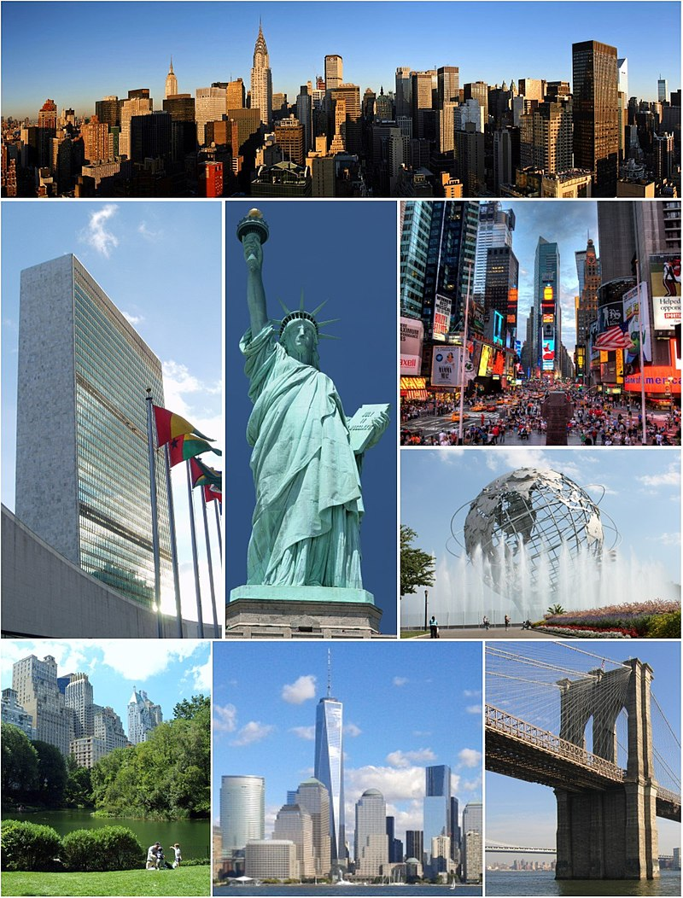

La ciudad se compone de cinco boroughs (a veces traducido como 'condado', 'distrito' o 'comuna') cada uno de los cuales coincide con un condado: Bronx, Brooklyn, Manhattan, Queens, y Staten Island. Con más de 24 millones de neoyorquinos en un área urbana de 830 kilómetros cuadrados (320 mi²), Nueva York es la segunda ciudad con más densidad de población de los Estados Unidos, solo detrás de Union City, Nueva Jersey, localizada al otro lado del río Hudson.
